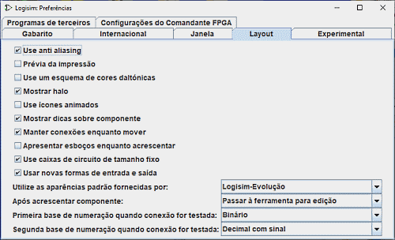

A guia Layout

Esta guia inclui as preferências que afetam o comportamento do editor de layout do circuito.
-
Mostrar envoltória (halo): Especifica se é para desenhar uma envoltória oval mais clara em torno do componente ou da ferramenta cujos atributos estão exibidos na tabela de atributos corrente.
-
Mostrar dicas sobre componentes (component tips): Especifica se é para exibir as "dicas de ferramentas" que aparecerão temporariamente quando o mouse passar sobre componentes que as tiver definidas. Por exemplo, se você passar o cursor do mouse sobre um pino de um subcircuito, ele irá mostrar o rótulo do pino correspondente dentro desse subcircuito. Se passar sobre uma das extremidades de um distribuidor (splitter), irá indicar a qual bit ela corresponde. Além disso, todos os componentes do tipo plexers, aritméticos ou de memória irão fornecer informações sobre as suas entradas e saídas através dessas dicas.
-
Manter conexões ao mover-se: Indica se Logisim deverá adicionar fios quando os componentes forem movidos para preservar suas conexões. Por padrão estará habilitada — embora possa ser desabilitada temporariamente pressionando-se a tecla Shift enquanto mover os componentes. Se essa opção estiver desmarcada, então o comportamento padrão será para não adicionar fios durante uma movimentação — embora você possa habilitá-la temporariamente pressionando a tecla Shift durante a movimentação.
-
Mostrar esboços (ghosts) ao adicionar: Se marcada, e quando uma ferramenta para adicionar novo componente for selecionada, um esboço de cor cinza-claro do componente a ser adicionado será desenhado, a medida em que o cursor se mover sobre a tela. Por exemplo, se você selecionar uma porta AND e mover o cursor para a janela (sem pressionar o botão), um esboço cinza-claro dessa porta irá mostrar onde a porta AND se fixará quando o botão for clicado.
-
Após adição de componente: O comportamento padrão, após a adição de cada componente individual, é voltar para a ferramenta de edição, para que você possa mover os componentes ao redor, e também para adicionar-lhes as conexões (fios). A caixa do menu drop-down permitirá alterar esse comportamento para que o Logisim permaneça na mesma ferramenta para adicionar mais instâncias do mesmo componente, até que outra opção escolha a ferramenta Editar. (Este foi o comportamento padrão do Logisim antes da versão 2.3.0. Embora mais intuitivo, esse comportamento requer maior movimentação do mouse para alternar entre ferramentas.)
-
Primeira base de numeração para quando for testar: Serve para configurar como os valores serão exibidos quando um fio for clicado ao ser usada a ferramenta para testes. Ao clicar em um fio, será exibido temporariamente seu valor corrente, permanecendo assim até o usuário venha a clicar em outras partes do circuito.
-
Segunda base de numeração para quando for testar: Serve para configurar a segunda opção de como os valores do fio serão exibidos. .